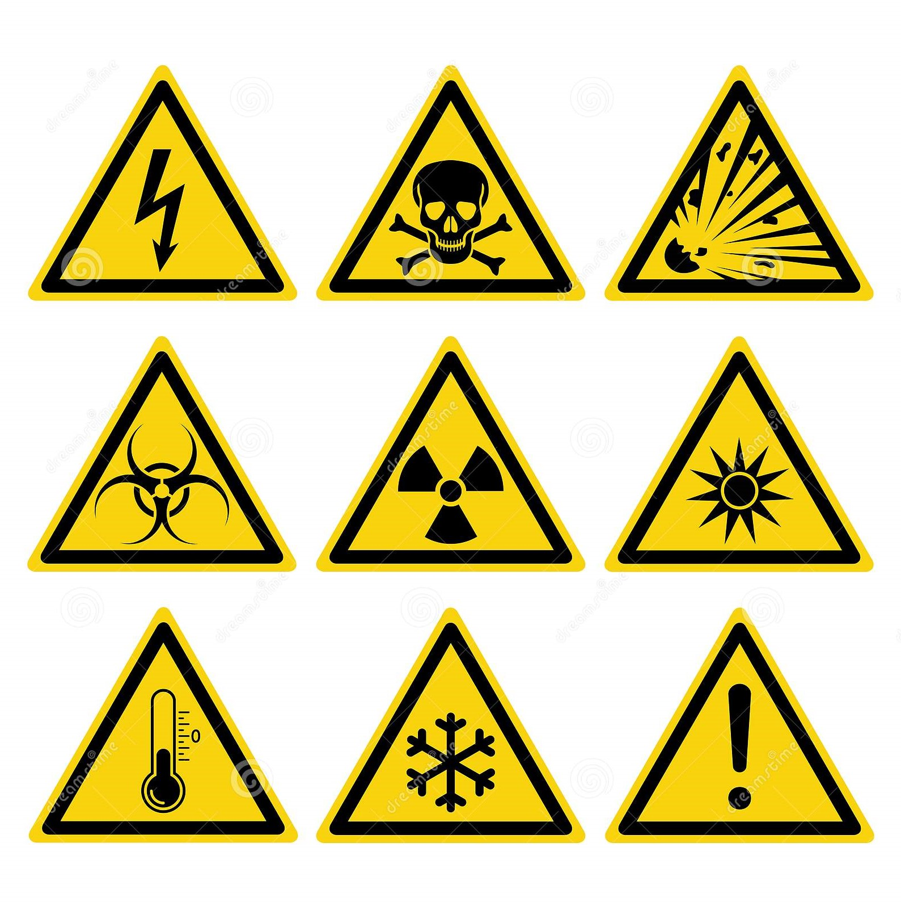

Fablab safety
Objectives:
To understand WSH regulations in SP and the safe practices in Fab Lab workshops. To be familiarised with the safety infrastructure in Fab Lab workshops and to know the different hazards for the different machines.
SP's safe framework:
Support- support and engage students on safety and health issues in campus.
Act- 4 main focus areas: risk management capability, incident-accident reporting, training and education on WSH, emergency preparedness and response plan.
Facilitate- emergency drill, in-house training and outreach programme.
Educate- all students and staff about safety and the different hazards in Fab Lab workshops.
Incident reporting
Report all work related injuries to the technical support staff or lecturer.Contact the school’s general office or call 67721234 when treatment to injury is required.Do not leave injury unattended.
Handling hazards
Here are the various potential hazards in Fablab
Hazards are generally categorised into 2 types, mechanical and non-mechanical hazards.
Below is a detailed explanation of the mechanical and non-mechanical hazards that are present in Fablab
Safe use of hand and power tools
When handling with hand and power tools, one has to be extremely careful to prevent any injuries. Below is a detailed explanation of the safe use of hand and power tools.
Machine guards and safety devices.
Machine guards serve as a protective layer to prevent workers from coming into contact with moving parts of machines, flying debris, splashing chemicals and sparks. Below is a detailed explanation of machine guarding and safety devices.